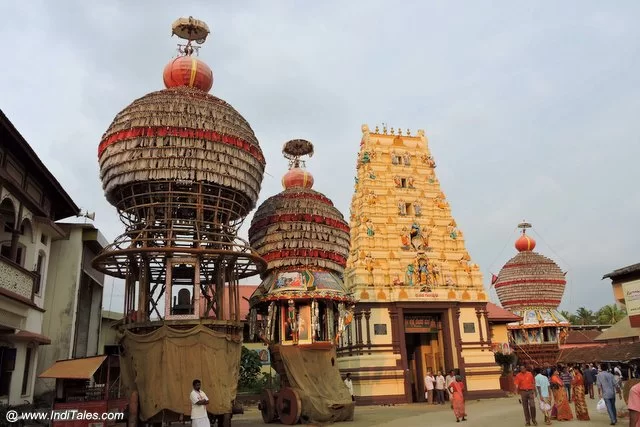
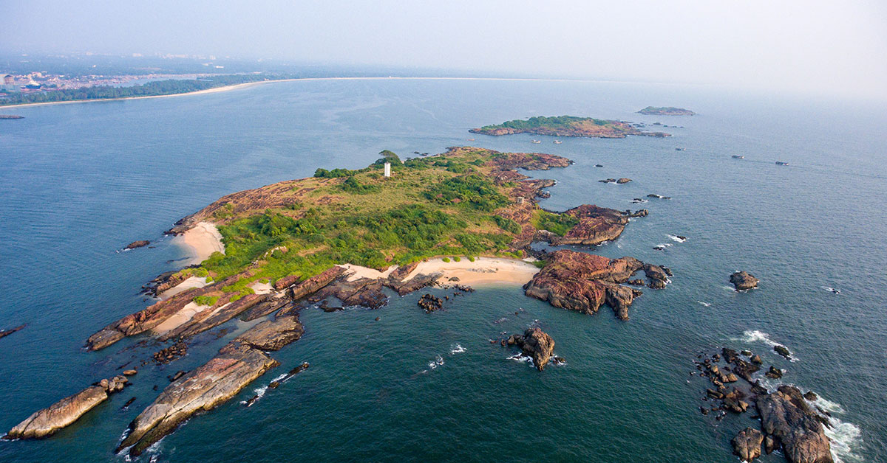
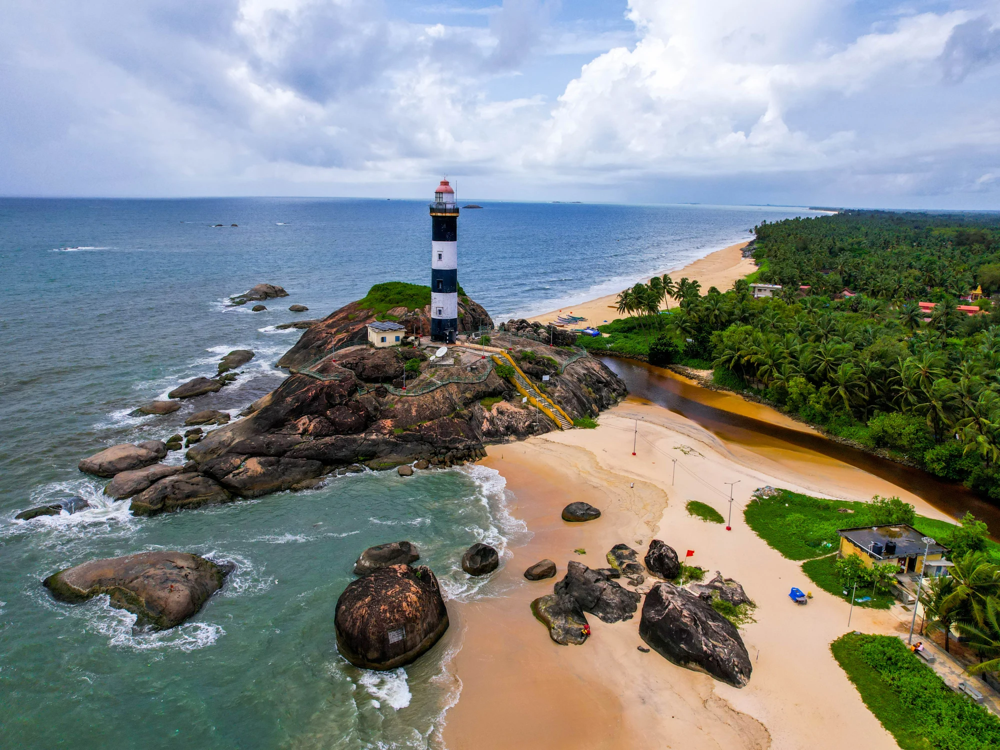

Destinations in Udupi
Explore some of the most popular destination in udupi.
Sri Krishna Temple
The Sri Krishna Temple is the famous landmark of udupi, dedicated to Lord Krishna. This centuries-old temple is a majir pilgrimage site, Known for its unique tradition where the deity is worshipped through a window called the "Kanakana Kindi."
- Highlights:Daily rituals, the grand Rathotsava(Chariot Festival) and the rich culuture history.
- Best Time to Visit:Troughout the year, especially during festivals like Janmashtami.
Malpe Beach

Malpe Beach is a pristine and serene beach located just 6 km from Udupi. It's popular for both locals and tourists, offering gokden sands, clear water, and a range of water sports.
- Highlights:Water sports like jet-siking and parasailing ,sunset views, beachs shacks offering fresh seafood.
- Best Time to Visit: October to February.
St Mary's Island
Located a short boat ride from Mslpe beach, St.Mary's Island is famous for its unique hexagonal basalt rock formation Legend says that Vasco da Gama first ser foot in India here 1498
HighlightsScenic boat ride, unique geological formations, and peacefun beach ambiance.
Best Time to visit: October to January, when the sea is calm.
Kaup Beach
Kaup Beach, Known for its iconic lighthouse, is another beatiful coastal spit near Udupi. The lighthouse, built in 1901, offers panaramic views of the Arabian sea.
Highlights: Climbing the lighthouse for sunset views, long walks along the beach exploring the nearby ruins of an old fort
Best Time to Visit:September to March